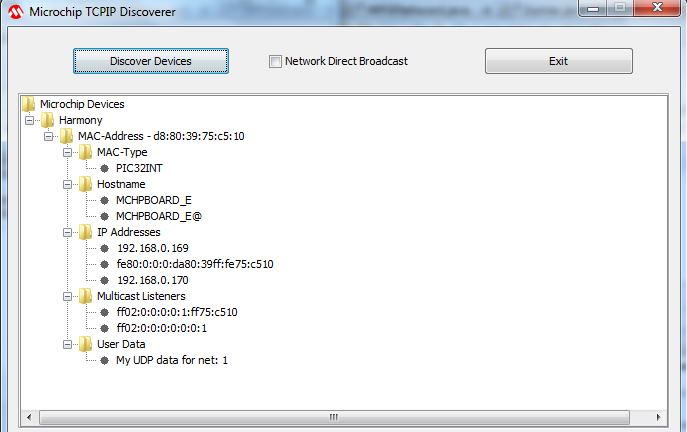

|
MPLAB Harmony TCP/IP Help
|
The TCP/IP Discoverer personal computer project (formerly known as the Embedded Ethernet Device Discoverer) will aid in embedded product device discovery (with the TCP/IP Announce protocol) and will demonstrate how to write personal computer applications to communicate to embedded devices.
Clicking Discover Devices (see the following figure), causes the application to transmit a broadcast UDP packet containing the message, "Discovery: Who is out there?" on the local network to port 30303. If any embedded devices with the Announce protocol enabled are connected to the network, they will respond with a UDP packet containing their MAC-Address, MAC-Type (interface type), Hostname (NBNS), IP Addresses (IPv4/IPv6), and Multicast Listeners (IPv6).
"Network Direct Broadcast" check box is used to select the type of the broadcast to be used by the tcpip discoverer tool to send the broadcast packet. When selected, the network directed broadcast will be used. When not selected, the "network limited broadcast" will be used. The default is network limited broadcast.

Each part of this UDP packet is displayed as a set of hierarchical data (JTree Class). "Devices" is represented as a root node and each MAC-Address of the UDP packet is represented as the child node and other payload information of the UDP data are child nodes to the MAC-Address node. The "Truncated" string is added as a child node to the MAC-Address node, if the Announce UDP packet payload does not have sufficient space to contain the interface details.
More than one IPv4 address and Hostname could be displayed for a physical network interface that supports virtual interfaces.
If TCPIP_STACK_USE_HTTP_SERVER is enabled, double clicking MAC-Address node, http://ipv4address client, will communicate with the Web Server module of the device.
The Java source code for this application is also included. This source code should provide a rough idea of how to write a personal computer-based application to communicate with your embedded devices.
|
MPLAB Harmony TCP/IP Help
|